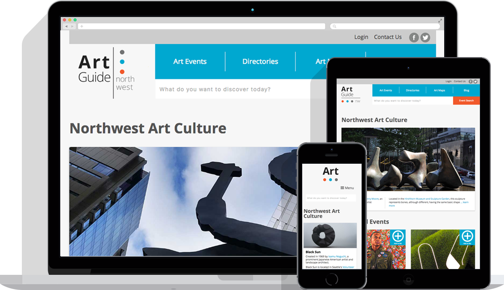

Project Summary
In a small team of 3, we created a new identity and website for the very outdated Art Guide brand. I created both a responsive logo, and a responsive website.
Problem Space
How might we provide information about Art events to the residents and visitors to the Pacific Northwest?
Process
I started our process with user research, which included both a survey and interviews. I then created paper prototypes and an Axure prototype, which we used in usability studies to ensure success.
After many iterations with our prototype I implemented our design using HTML, CSS, and JavaScript.
Title
PNW Art Guide Redesign
Date
Jan 2016 - Mar 2016
Links
Tasks
- User Research
- Content Strategy
- Web Design
- Web Development
Tools
- Adobe Illustrator
- Adobe Photoshop
- HTML/CSS
- JavaScript
Collaborators
- Carol Bolt
- Gabby Coronado